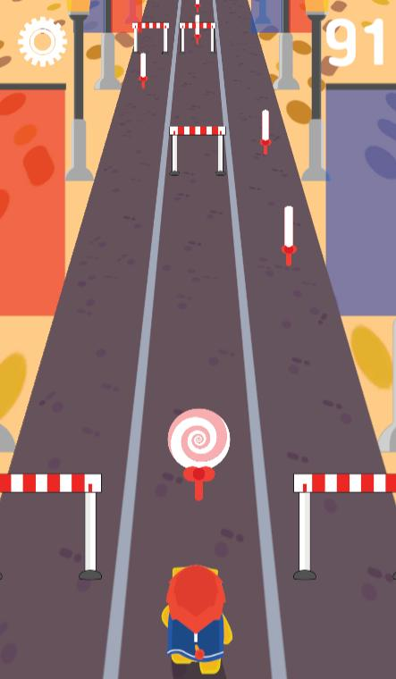

PROJECT 2025 · INTERNSHIP
러닝 허들
레인을 옮겨 장애물을 피하는 세로형 모바일 하이퍼캐주얼 게임입니다. (주)샤이닝라이언 인턴 4주 동안 팀이 기획부터 WebGL 빌드와 배포까지 마쳤고, 저는 장애물 스폰 시스템과 UI를 맡았습니다.
팀 결과: 4주 만에 WebGL 빌드 · itch.io 배포
Unity 2022.3.51fC#WebGLScriptableObject
프로젝트 개요
| 장르 | 터치 기반 하이퍼캐주얼 (2.5D, 세로형) |
|---|---|
| 플랫폼 | 모바일 · WebGL로 itch.io 배포 |
| 기간 | 2025.06 – 2025.07 (4주) |
| 팀 구성 | 4인 (개발 3, 아트 1) |
| 소속 | (주)샤이닝라이언 인턴십 |
담당 범위
| 기능 | 담당 | 확인 위치 |
|---|---|---|
| 장애물 랜덤 스폰, 게임 상태·점수, 오디오 관리 | 공동 (약 40%) · 스폰 규칙과 패턴 시스템은 대부분 직접 작성 | 사례 1 |
| 점수 표기, 설정창, 튜토리얼 | 주 담당 (약 80%) | 사례 2 |
| 코드 리뷰와 통합 | 참여 | — |
1. 피할 수 없는 배치가 나오지 않는 장애물 스폰
무작위로만 장애물을 놓으면 3레인이 모두 막히는 줄이 나올 수 있습니다. 그래서 한 줄에 빈 레인이 반드시 남도록 스폰 규칙을 정했습니다.
- 빈 레인 보장: 랜덤 배치는 3레인 중 1~2개만 막고, 레인은 집합으로 뽑아 같은 레인이 두 번 선택되지 않습니다.
- 랜덤 70% + 설계된 패턴 30%: 패턴은 ScriptableObject로 정의해 코드 수정 없이 인스펙터에서 추가합니다.
- 패턴은 끝까지 진행: 패턴이 시작되면 진행 중인 패턴과 단계를 추적해, 마지막 단계까지 랜덤 배치로 끊기지 않습니다.
- 재사용: 맵 구간과 장애물을 모두 재사용합니다 (팀 공동 작업).
- 난이도: 시간이 지날수록 속도가 올라가 최대 30까지 상승합니다 (속도와 레인 이동은 팀원 담당).
public int[] SetSpawnPosition()
{
if (_currentPatternIndex != -1) return ReturnPatternStep(); // 진행 중인 패턴 우선
if (Random.Range(0f, 1f) < _patternProbability) return StartNewPattern(); // 30%
return ReturnRandomPosition(); // 70%
}
private int[] ReturnRandomPosition()
{
int spawnCount = Random.Range(1, _laneCount); // 1 ~ 2개: 빈 레인 보장
...
}2. 튜토리얼이 떠 있는 동안 게임이 진행되는 문제
- PROBLEM
튜토리얼 창을 읽는 동안 뒤에서 게임이 계속 진행됐습니다.
- CAUSE
튜토리얼 창은 UI로만 띄웠고, 창이 열려 있는지와 게임 진행이 연결되어 있지 않아 플레이가 그대로 이어졌습니다.
- SOLUTION
튜토리얼 창이 열려 있는 동안 timeScale로 일시정지하고, 터치해서 닫으면 재개합니다.
- VERIFY
창이 화면 전체를 덮어서, 닫는 터치가 레인 이동 입력으로 들어가지 않는 것을 확인했습니다.
회고
- PC 브라우저 비율: 세로형 화면이 PC 브라우저 비율에 맞지 않는 문제를 기간 안에 해결하지 못했습니다. 다음 프로젝트부터는 itch.io 임베드 뷰포트를 세로 비율로 고정하거나, 카메라에 레터박스를 적용하는 방법 등을 적용해보겠습니다.